{kind=link}
{kind=link}
{kind=link}
{kind=link}
{kind=link}
{kind=link}
{kind=link}
Main
- Setup
- Buttons, debug LEDs
- Speed profiles
- Algorithm
- Communication
Clara Casas Castedo & Miguel Sánchez de León Peque
2019-11-09

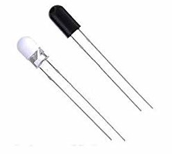

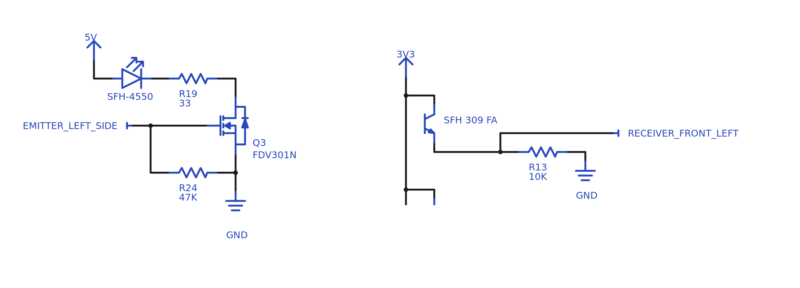
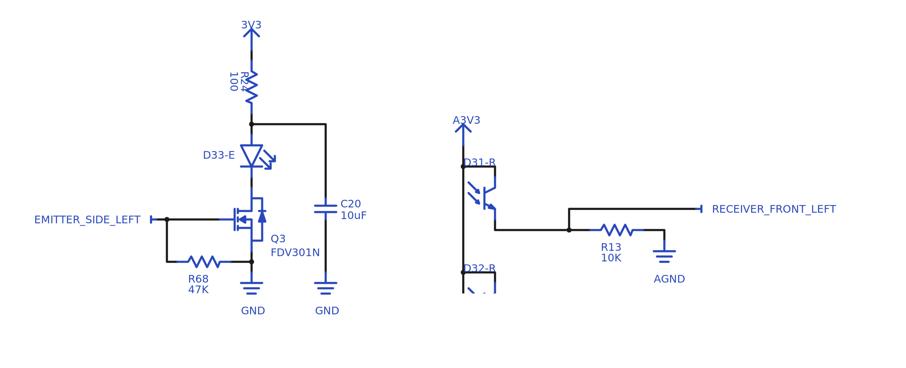
\[ y = e^{\frac{a}{x+b}} \]
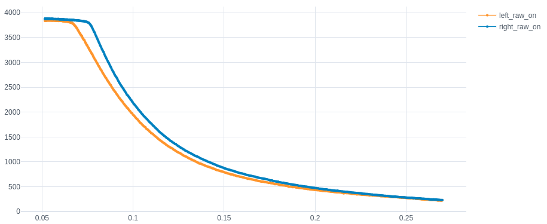
More on micromouseonline.com
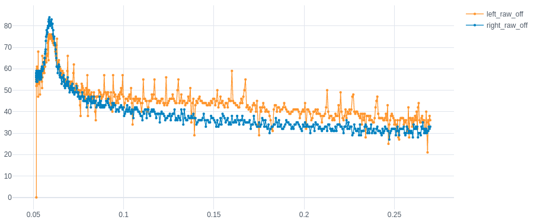

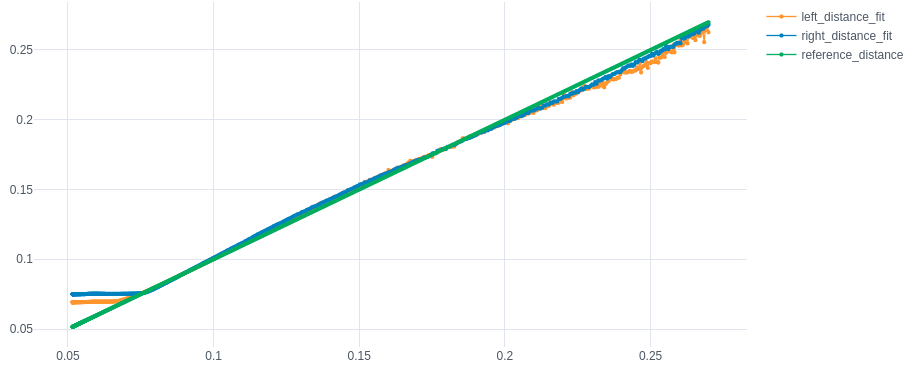
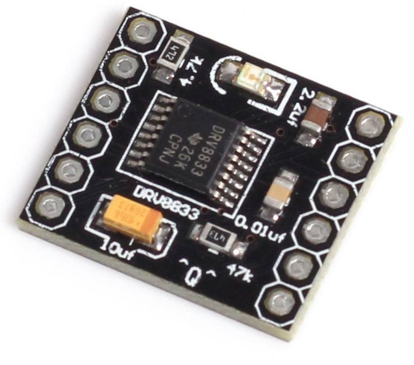

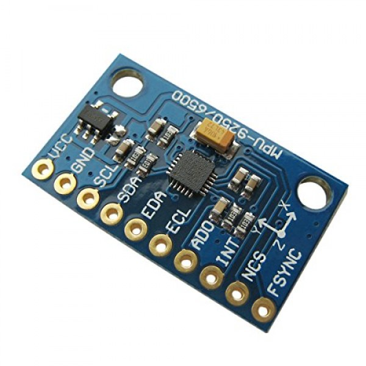
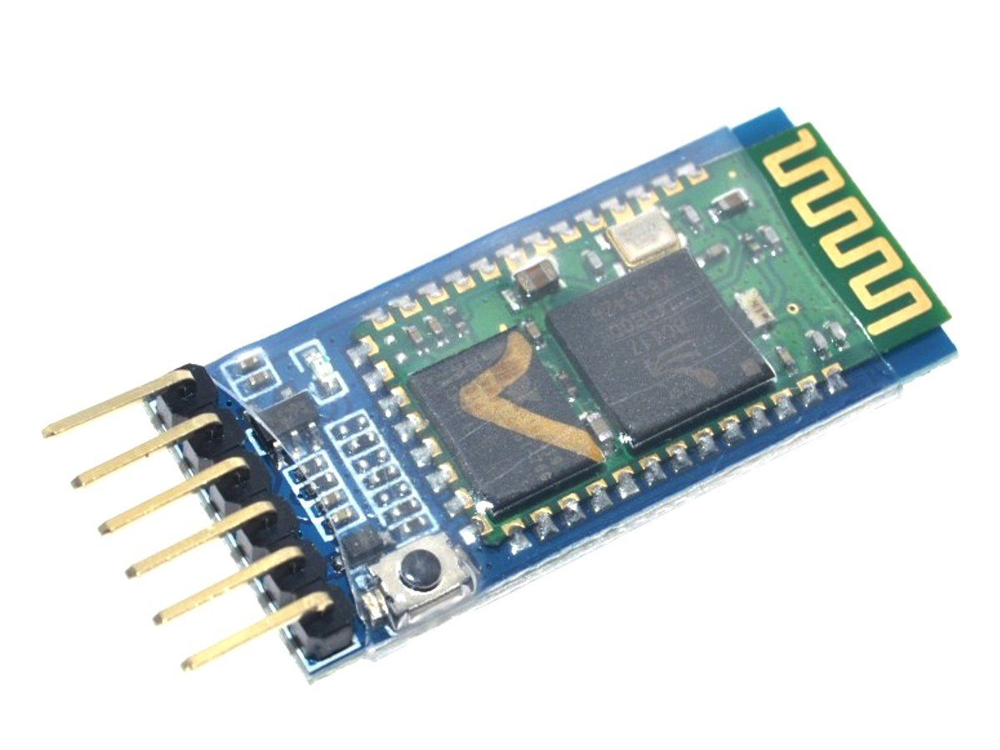
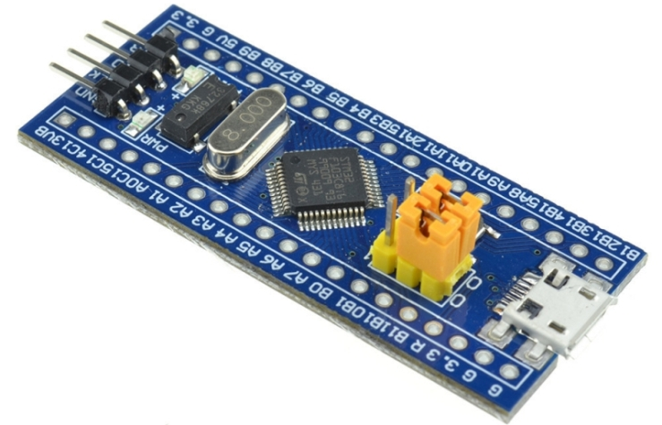
| Peripheral | Use |
|---|---|
| ADC1 | Phototransistors |
| ADC2 | Battery |
| TIM1 | PWM signal for speaker / Sensors state machine |
| TIM2 | Left motor quadrature encoders |
| TIM3 | PWM signals for left and right motors |
| TIM4 | Right motor quadrature encoders |
| USART | Serial, Bluetooth |
| SPI | Gyroscope |
| GPIOS | Infrarred emitters, LEDs, buttons |
| SYSTICK | Control, encoder, distances |


Image taken from micromouseusa.com

Image taken from micromouseonline.com

Image taken from micromouseonline.com

Image taken from micromouseonline.com
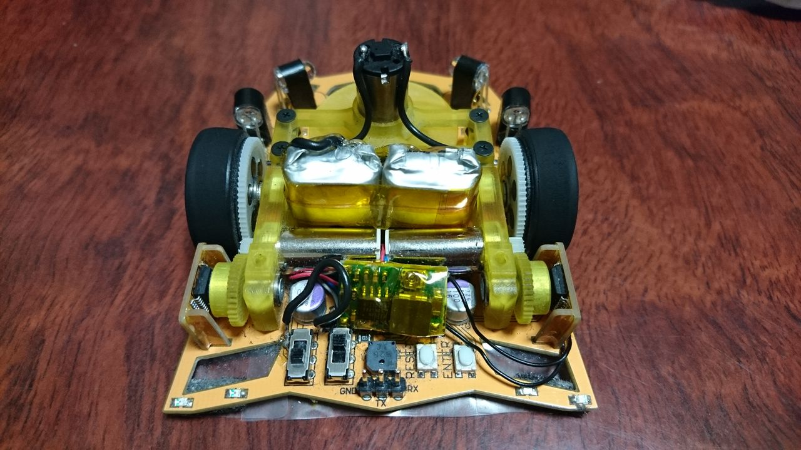
Image taken from http://haido.blog.jp/
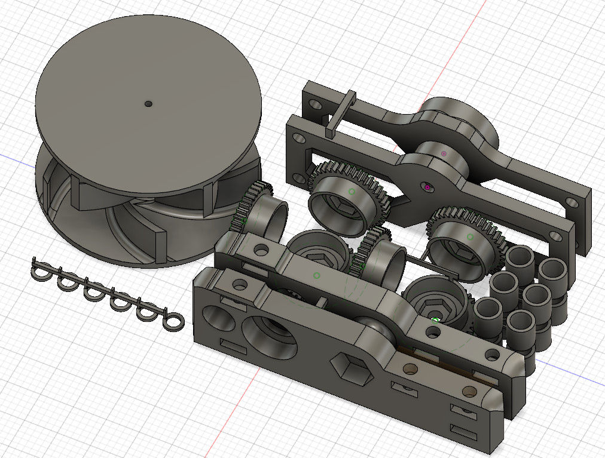
Image taken from http://haido.blog.jp/
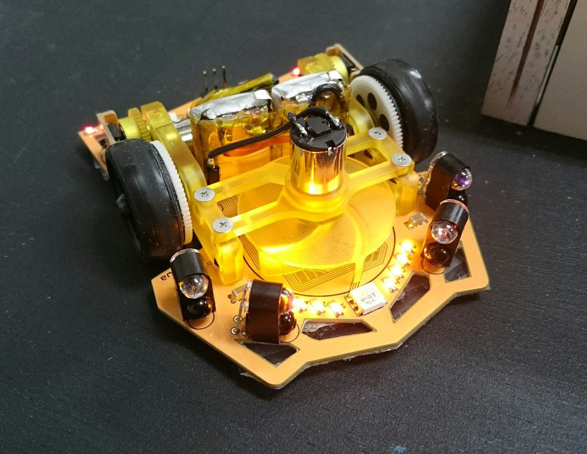
Image taken from http://haido.blog.jp/

\[ \begin{aligned} \overline{v_2} &= \overline{v_1} + \overline{w} \wedge \overline{r_{21}} \\ v_2 \overline{u} &= v_1 \overline{u} + (w \overline{u_z}) \wedge (2d \overline{t}) \\ v_2 &= v_1 + 2dw \\ \\ w &= \frac{v_2 - v_1}{2d} \end{aligned} \]
\[ \begin{aligned} \overline{v_M} &= \overline{v_1} + \overline{w} \wedge \overline{r_{M1}} \\ v_M \overline{u} &= v_1 \overline{u} + (w \overline{u_z}) \wedge (d \overline{t}) \\ v_M &= v_1 + wd \\ &= v_1 + \left(\frac{v_2 - v_1}{2d}\right)d \\ \\ v_M &= \frac{v_1 + v_2}{2} \end{aligned} \]


From the motion equations:
\[ \begin{aligned} \dot{x} &= v_m cos \theta \\ \dot{y} &= v_m sin \theta \end{aligned} \]
Considering \(\dot{w} \equiv cte.\) and \(v_m \equiv cte.\):
\[ \theta = w_0 t + \frac{k}{d} t^2 \]

\[ \omega = \omega_{max} sin\left(\frac{x}{\lambda}\right) \]
\[ \dot{\omega} = \frac{\omega_{max}}{\lambda} cos\left(\frac{x}{\lambda}\right) \]
Thanks Peter! 😄
\[ F_α = {mα \over 2} \]
Angular acceleration
\[ F_{Δω} = {IΔω \over 2T} \]
Centrifugal force
\[ F_ω = {mvω \over 2} \]
\[ F_R = \sqrt{(F_α + F_{Δω})^2 + F_ω^2} \\ F_L = \sqrt{(F_α - F_{Δω})^2 + F_ω^2} \]
While turning \(F_\alpha = 0\):
\[ F = \sqrt{\left({I\dot{\omega} \over 2T}\right)^2 + \left({mv\omega \over 2}\right)^2} \]
\[ F = \sqrt{{I^2\omega_{max}^2 \over 4T^2\lambda^2} cos^2\left({x \over \lambda}\right) + {m^2 \omega_{max}^2 v^2 \over 4} sin^2\left({x \over \lambda}\right)} \]
\[ F = \sqrt{k_1 cos^2\left({x \over \lambda}\right) + k_2 sin^2\left({x \over \lambda}\right)} \]
If \(k_1 = k_2 = k_0^2\):
\[ F = k_0 \sqrt{cos^2\left({x \over \lambda}\right) + sin^2\left({x \over \lambda}\right)} = k_0 \]
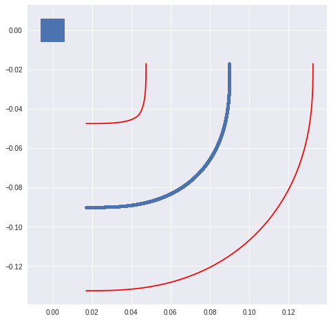
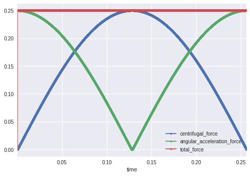
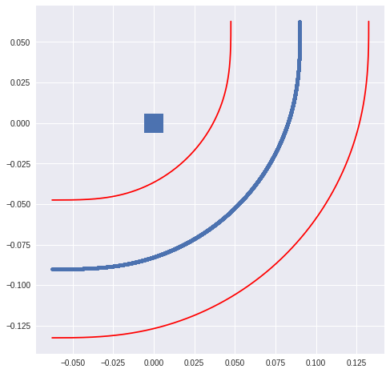
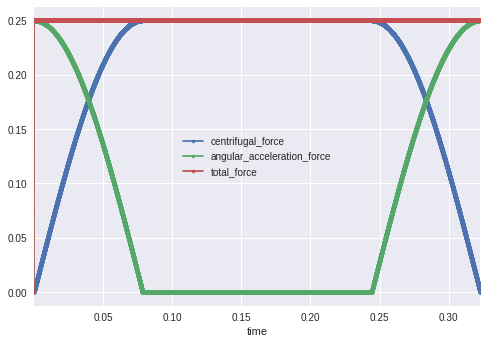
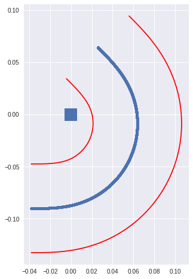
# Initialize distances
distances = inf
for goal in goal_cells:
queue.push(goal)
distances[goal] = 0
# Flood fill
while not queue.is_empty():
cell = queue.pop()
distance = distances[cell] + 1
for direction in ["east", "south", "west", "north"]:
if cell.has_wall(direction):
continue
neighbor = cell.neighbor(direction)
if distances[neighbor] <= distance:
continue
distances[neighbor] = distance
queue.push(neighbor)

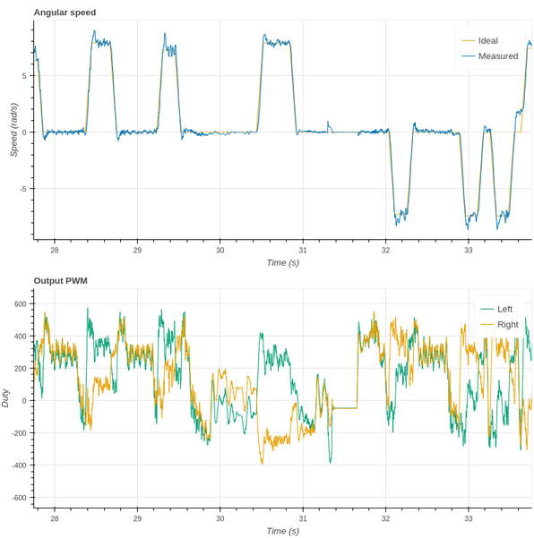